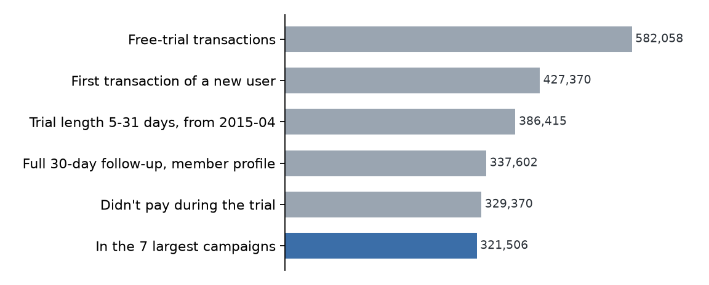
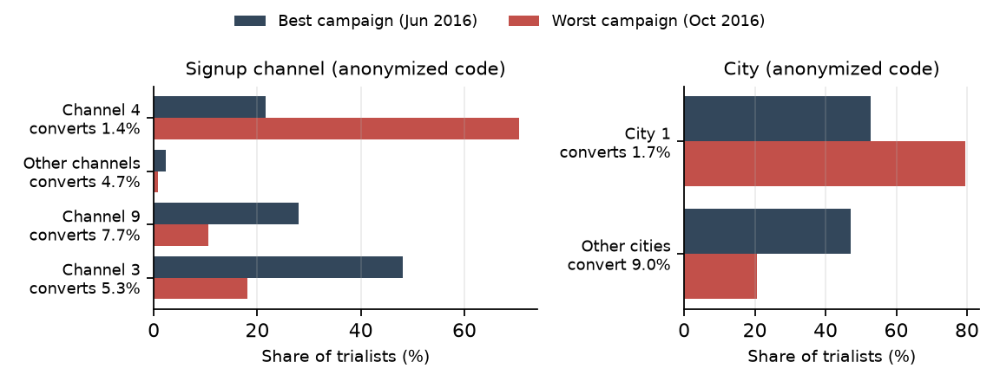
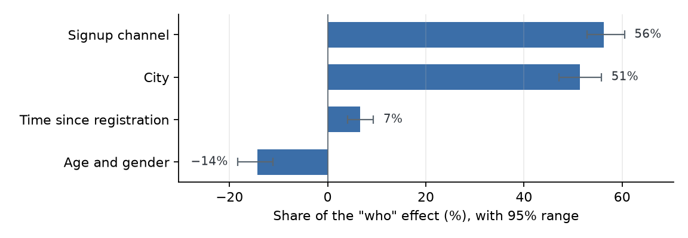
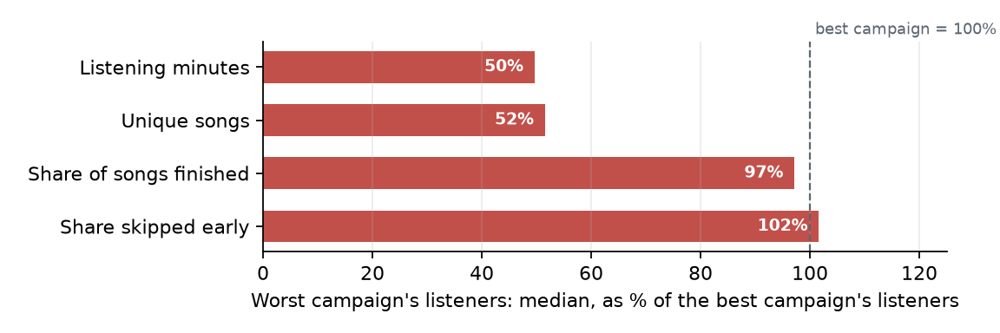

Who a campaign reaches matters more than what trialists do
Why some free-trial campaigns convert far better than others, from 321,506 trials on a music-streaming service.
The problemSome trial campaigns convert 2.5× better than others
A free trial is a bet: the service gives away about a week of music and hopes people stay and pay. On KKBox, a music-streaming service, how often that bet paid off depended heavily on the campaign that brought people in.
Here a "campaign" is one month of trial sign-ups: the data has no campaign ID, so each month stands in for one.
To close a gap like this, a growth team needs to know where to act. Did the campaigns reach different kinds of people? Then it's a targeting problem. Or did similar people have a different first week? Then it's an onboarding problem. Suno faces the same question for its own trials; public KKBox data lets us measure the split cleanly and carry the method over.
The methodTwo "what if" questions
To separate targeting from onboarding, we ask two questions about the worst campaign:
The first question measures who the campaign reached: signup channel, city, age, gender and how long ago people registered. The second measures what they did: how they listened in their first five trial days. Whatever gap neither question explains belongs to the campaign itself.
The answers come from a statistical model that estimates each trialist's chance of paying from three things: their campaign, their profile, and how they listened in their first five days.
How the two swaps work. For "same people", each trialist in the worst campaign is paired with a randomly chosen trialist from the best campaign and takes on that person's profile. The model then re-estimates their chance of paying, and the rise is the part of the gap that who explains. For "same habits", each worst-campaign trialist keeps their own profile, but takes on the first-five-day listening of a best-campaign trialist who signed up through the same channel and is in the same age band. Pairing like with like means we compare the listening of similar people, not of different audiences. In both swaps the trialists stay in the worst campaign, which is what lets the leftover be pinned on the campaign.
To check how certain the answers are, the whole analysis is repeated 200 times on resampled data. The ranges shown below cover 95% of those repeats.
The data321,506 trials in 7 campaigns
The data comes from KKBox's public WSDM Cup 2018 release: every subscription transaction, a profile for each member, and a daily log of how much each person listened.
Not every free trial fits the question, so the trials were narrowed down step by step:

Each bar shows how many trials remain after one filter. We keep each person's first trial, drop odd trial lengths, keep trials with a member profile and 30 days of follow-up, drop people who paid before the trial ended, and keep the 7 biggest sign-up months. The blue bar is what the rest of this page analyzes.
Global findingsMost of the gap is who each campaign reached
Here is how the 4.8-point gap between the best and worst campaign splits:

Each bar is a share of the gap, and the thin line through it is the 95% range. The blue bar, who each campaign reached, explains 83% of the gap (71–96%). The orange bar, what trialists did in their first five days, explains 27% (24–32%).
The grey bar, the campaign itself, is what's left after both swaps. Giving the worst campaign both the best campaign's people and their habits would close slightly more than the whole gap (111%), so the leftover is a small negative number (−11%). Its range (−27% to +5%) includes zero, so the campaign itself made no measurable difference.
The audience effect shows up beyond the best and worst pair. The next chart shows each campaign's actual conversion next to what it would be if it had reached the average mix of all trialists:

Grey dots are actual conversion; blue diamonds are conversion with the average mix of people. For the 6 campaigns of 2016, the spread shrinks from 4.8 points to 1.1: they differed mostly in whom they attracted, not in how well they converted them. June 2015 is the exception: its audience was better than average, and with an average audience it would convert only 2.4%.
Findings broken downWhat drives the gap, piece by piece
Who: how people signed up, and where they live
The two biggest audience differences between the best and worst campaign are signup channel and city:

Dark bars are the best campaign's trialists and red bars the worst's. Each label shows how often that group pays, across all trialists; the channel and city codes are anonymized in the data. The worst campaign leaned on signup channel 4 (71% of its trialists) and city 1 (79%), the two groups least likely to pay: 1.4% and 1.7%.
Splitting the "who" share by trait confirms these two do the work:

Each bar is a trait's share of the audience effect, with its 95% range. Signup channel (56%) and city (51%) carry it. Time since registration adds little (7%), and age and gender pull slightly the other way (−14%); together the four add to 100%.
What: showing up in the first days
The clearest difference in behavior is how many trialists never listened at all:

The bars count trialists by how many of their first five days they listened. In the worst campaign, 43% never listened, against 28% in the best.
That matters, because showing up goes hand in hand with paying:

The grey line is what actually happened: of the trialists who listened on that many days, the share who paid. The blue line holds the mix of people fixed (same signup channels, cities, ages) and asks how many would pay at each level of listening. It still climbs, from 1.2% to 14.5%, so heavy listening isn't just a sign of a better audience. It can't rule out that people who already meant to pay listen more. And from 3 days up, the grey line sits above the blue: part of the raw climb is who heavy listeners are.
Among people who did listen, the difference was how much they listened, not how they reacted to the music:

The dashed line marks where the worst campaign's listeners would match the best's. They listened about half as much (50% of the minutes), but finished and skipped songs just as often. They used the product less; there's no sign they liked the music less.
ConclusionFix targeting first, then get trialists to show up
- Targeting first. Most of the gap (83%) comes from whom a campaign reached, above all signup channel and city.
- Then activation. About a quarter (27%) comes from the first five days, and it's about showing up and listening more, not about the music itself.
- Compare campaigns like for like. Most of the difference between campaigns is audience. Once people and habits match, the best and worst convert about the same, so comparing raw conversion mostly compares audiences.
What I would test at Suno
- Rank acquisition sources by how many trialists end up paying, not how many sign up, using a holdout that shifts spend between sources.
- Nudge trialists who haven't made anything within 24 hours of starting, in a randomized test, toward creating a first song.
- Report campaign tests at a fixed audience mix, so offers and creative are compared fairly.
Technical details and caveats
Population. First-time, $0 trials sold as 7-day trials, whose recorded expiry falls 5–31 days after the start, starting on or after 2015-04-01, with a complete 30-day follow-up: 329,370 trials; in the 7 largest months, 321,506. Excluded: trialists who paid during the trial (8,232) and trialists missing from the member file (48,147; almost none converted, pointing to an export artifact). Converted means paid within 30 days after the trial ended.
Model. Logistic regression of conversion on campaign, five audience traits and six banded behavior measures from the first five trial days. The two swaps are counterfactuals that keep the worst campaign's own effect; Shapley values share the overlap between them evenly, so their order doesn't matter. The "same habits" swap pairs trialists on signup channel and age band; since age is blank for most members, that pairing often reduces to channel plus "age unknown". Ranges are the 2.5th and 97.5th percentiles of 200 bootstrap refits, resampling trialists within each campaign.
An extreme pair. The best month is also the smallest (8,852 trials). Against the next-best month (July 2016), the split is similar: 81% who, 24% what, −5% the campaign itself.
Caveats. These are associations, not causes: people who already intend to pay probably listen more. "Campaign" is the trial start month. Age and gender are blank for most members; dropping them moves the split by about a point. Published cells have at least 20 trialists.